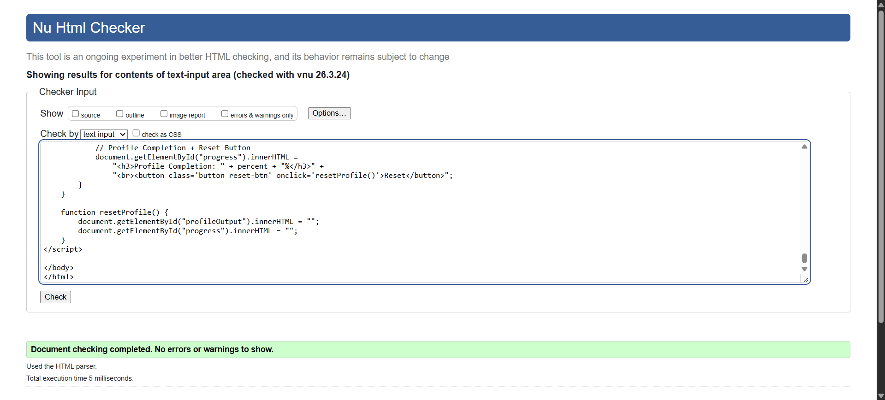
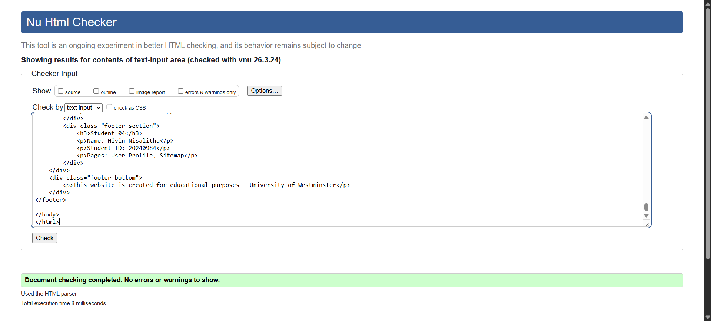
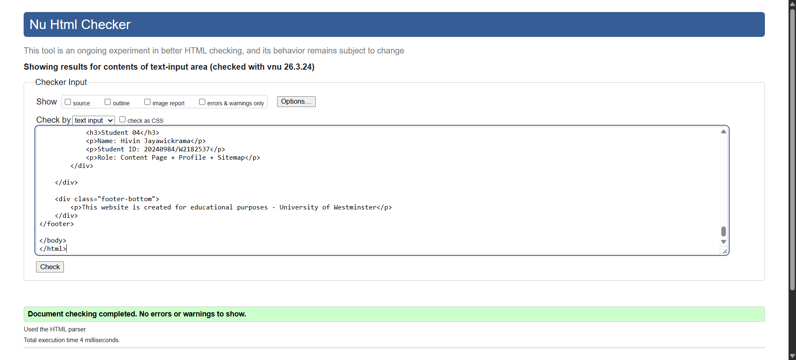

User Profile
Validating the User Profile page using the W3C validator helped fix small syntax errors. Achieving an error-free result ensures the page works correctly across different browsers and improves overall reliability.

Back to Page Editor page
Include a link back to the corresponding section of the Page Editor.
Sitemap
Validating the Sitemap helped identify and correct minor structural issues within the SVG layout. Achieving an error-free W3C report ensures standard-compliant code, guaranteeing that the interactive links and visual structure function smoothly across all devices.

Back to Page Editor page
Include a link back to the corresponding section of the Page Editor.
Content Page validation report
Validating my pages helped resolve minor issues with structure and interactive elements. Achieving an error-free W3C report ensures standard-compliant code, guaranteeing that the user profile functionality and sitemap navigation work smoothly across all browsers.

Back to Page Editor page
Include a link back to the corresponding section of the Page Editor.